Inteligência Artificial Aplicada
a Data Science para Reguladores
Bloco 6 — Curso ABAR: Medições Inteligentes e Gestão Integrada de Dados
24 a 27 de fevereiro de 2026
24 a 27 de fevereiro de 2026
Bloco 6 — IA Aplicada a Data Science
A IA Evoluiu — e Rápido
2022
ChatGPT
lançado
lançado
→
2023
GPT-4
multimodal
multimodal
→
2024
Agentes
autônomos
autônomos
→
2025
IA supera
humanos em
benchmarks
humanos em
benchmarks
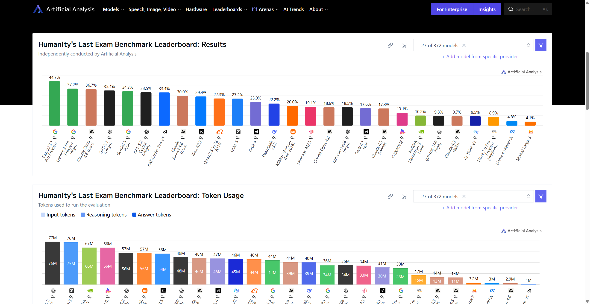
 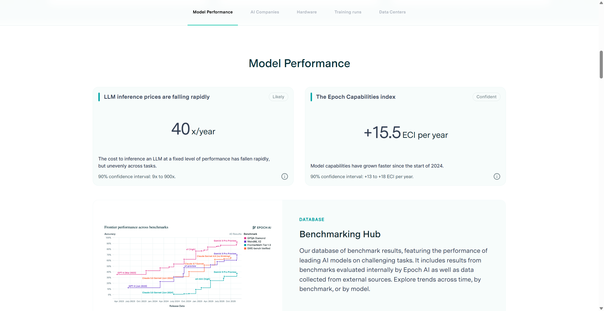
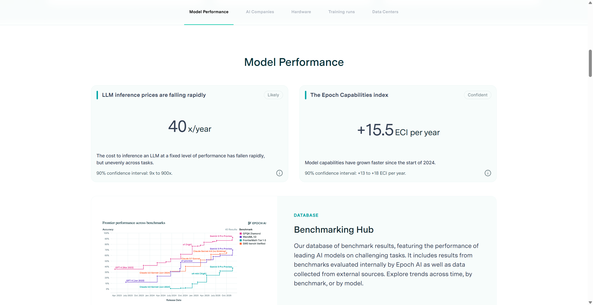

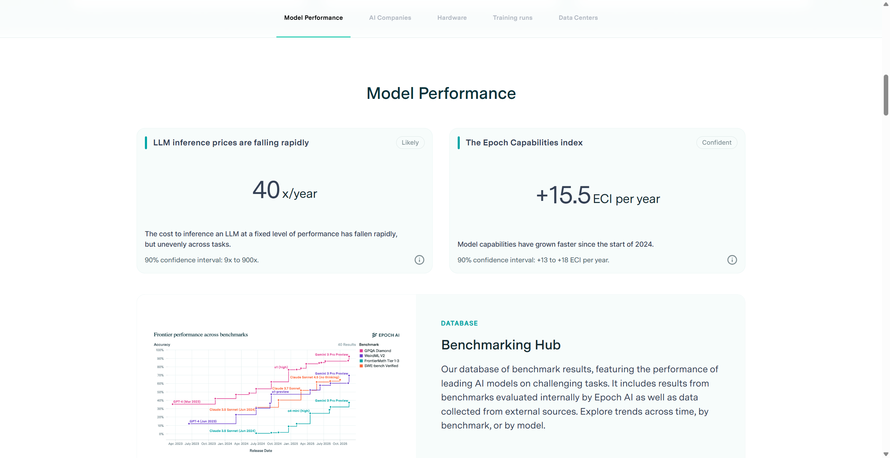
Bloco 6 — IA Aplicada a Data Science
Módulo 1: Ferramentas de IA
Os 4 grandes chatbots, IDEs, CLIs e Agentes
Módulo 1 — Ferramentas de IA
Módulo 1 — Ferramentas de IA
Módulo 1 — Ferramentas de IA
Módulo 1 — Ferramentas de IA
Módulo 1 — Ferramentas de IA
Módulo 1 — Ferramentas de IA
Módulo 1 — Demo ao Vivo
Módulo 1 — Demo ao Vivo
Módulo 2: Data Science com IA
Metodologia, coleta, limpeza e análise de dados
Módulo 2 — Data Science com IA
Metodologia IBM para Data Science

9 Etapas do Ciclo
- Compreensão do Negócio — Qual o problema regulatório?
- Abordagem Analítica — Que tipo de análise resolve?
- Requisitos de Dados — Que dados precisamos?
- Coleta de Dados — APIs, web scraping, portais
- Compreensão dos Dados — Explorar e entender
- Preparação dos Dados — Limpeza e transformação
- Modelagem — Análise estatística, ML
- Avaliação — Os resultados respondem a pergunta?
- Deploy — Relatório, dashboard, sistema web
Insight: Com IA, um nao-programador pode executar todas as 9 etapas.
Módulo 2 — Data Science com IA
Módulo 2 — Data Science com IA
Módulo 2 — Data Science com IA
Módulo 2 — Data Science com IA
Módulo 3: Caso Real AGENERSA
Sistema completo de auditoria de gas canalizado
Módulo 3 — Caso Real AGENERSA
Módulo 3 — Demo ao Vivo
Módulo 3 — Caso Real AGENERSA
Arquitetura do Sistema
Fluxo de Auditoria
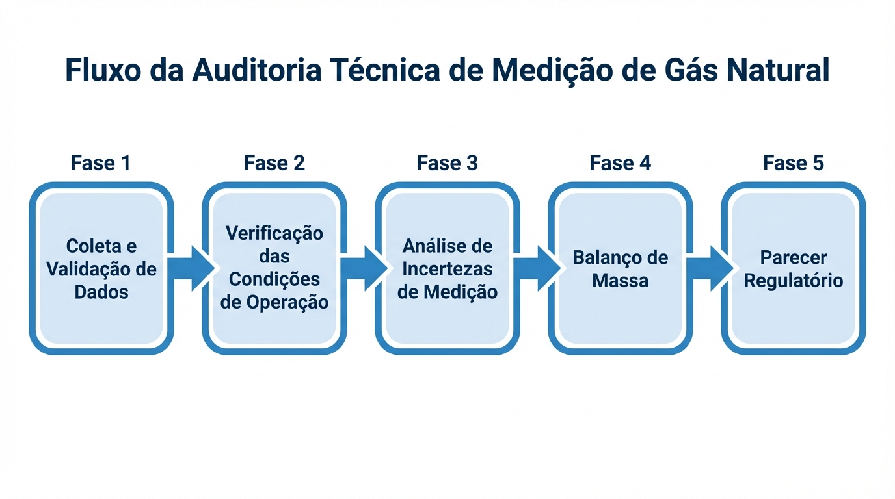Processo de Análise

Estrutura por Distrito
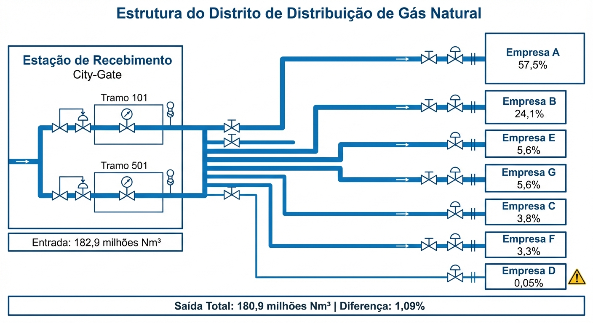
Módulo 3 — Demo ao Vivo
Demo 3: Interface Web do Sistema
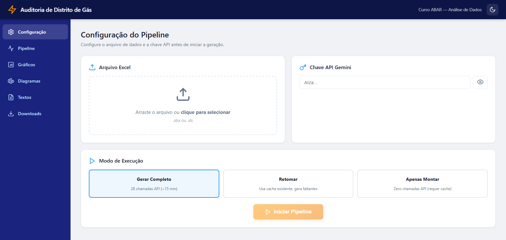
Configuração
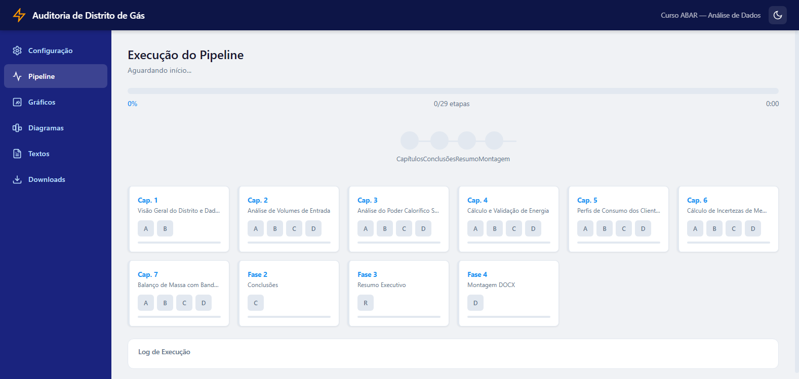
Pipeline

Gráficos
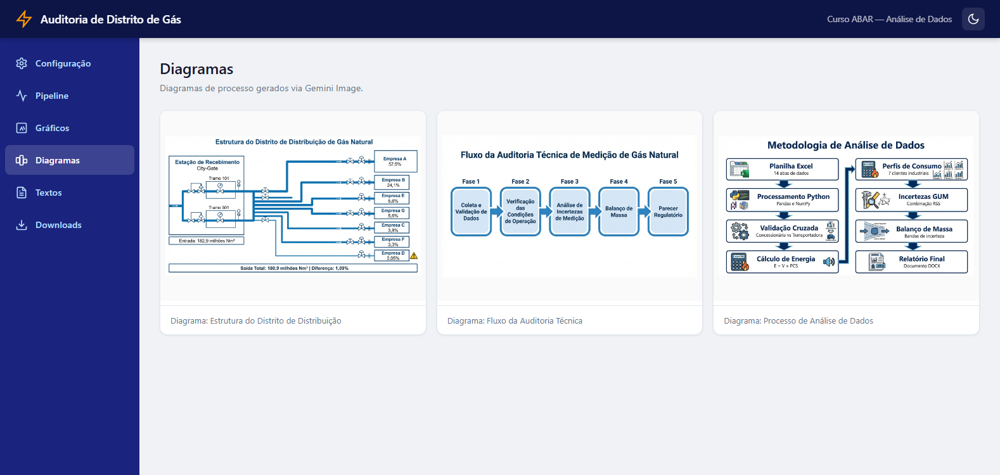
Diagramas
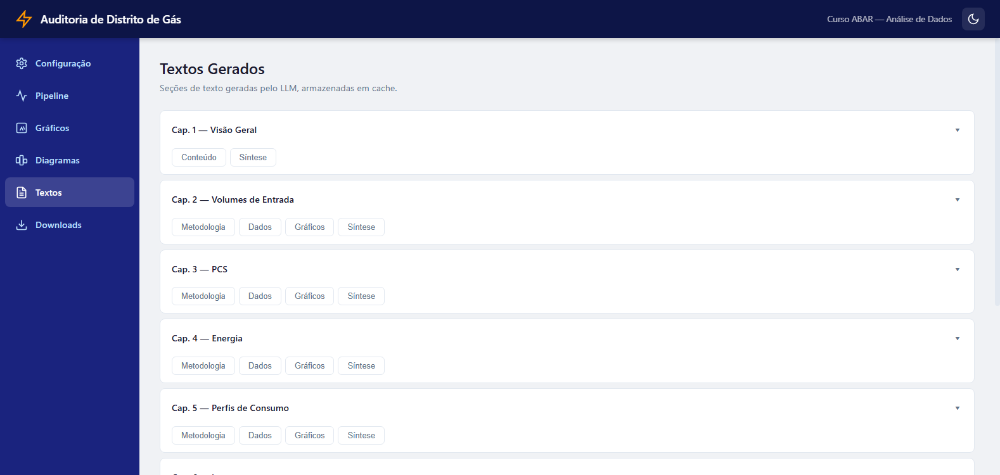
Textos
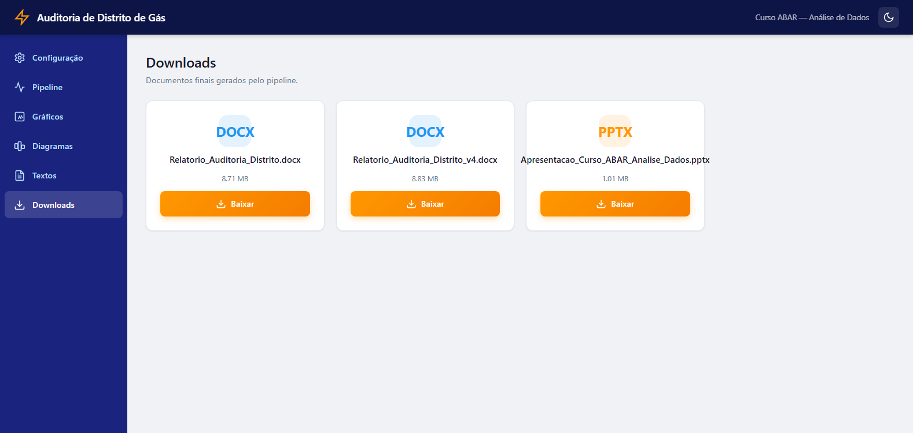
Downloads
Módulo 3 — Caso Real AGENERSA
Relatório Final — Resultados
100+
Páginas do relatório
23
Gráficos gerados
1:42
Minutos para gerar
28
Chamadas paralelas
a Gemini API
a Gemini API
Estrutura do Relatório
- Sumário executivo
- Análise por distrito (5 distritos)
- Indicadores de desempenho
- Comparativos temporais
- Recomendações regulatórias
- Anexos com dados completos
Módulo 3 — Caso Real AGENERSA
Módulo 3 — Caso Real AGENERSA
Módulo 4: Entrega e Avaliação
Deploy, ferramentas complementares e próximos passos
Módulo 4 — Entrega e Avaliação
Módulo 4 — Entrega e Avaliação
Módulo 4 — Entrega e Avaliação
Módulo 4 — Entrega e Avaliação
Módulo 4 — Avaliação Final